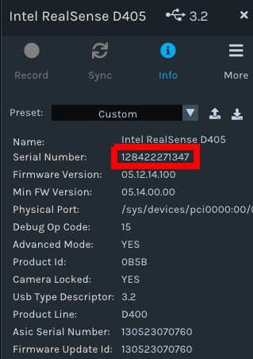

Stationary ALOHA Software Setup
Note
The Interbotix ALOHA Stationary control software is currently supported for ROS 2 Humble running on native Linux Ubuntu 22.04.
This guide will walk through the process of setting up the Interbotix ALOHA Stationary control software.
ROS 2 Installation
ROS 2 can be installed in one of two ways:
- (Preferred) Using the Interbotix X-Series Arm installation script. See the next section for details.
- Following the official ROS 2 Humble Ubuntu Debian install guide.
Interbotix X-Series Arm Control Software Installation
Follow the ROS 2 Standard Software Setup > AMD64 Architecture guide.
In short, run the following commands on a machine running Linux Ubuntu 22.04:
$ sudo apt install curl $ curl 'https://raw.githubusercontent.com/Interbotix/interbotix_ros_manipulators/main/interbotix_ros_xsarms/install/amd64/xsarm_amd64_install.sh' > xsarm_amd64_install.sh $ chmod +x xsarm_amd64_install.sh $ ./xsarm_amd64_install.sh -d humble -n
The installation script does the following:
- Installs ROS 2 Humble (if not already installed).
- Creates the following directory structure:
~/interbotix_ws └── src ├── interbotix_ros_core ├── interbotix_ros_manipulators └── interbotix_ros_toolboxes
- Installs dependencies.
- Builds the control software and other related tools.
- Configures the ROS 2 environment.
ALOHA Software Installation
- Clone the Interbotix fork of ALOHA into the workspace’s source directory:
$ cd ~/interbotix_ws/src $ git clone https://github.com/Interbotix/aloha.git
- Run rosdep to install any dependencies:
$ cd ~/interbotix_ws $ rosdep install --from-paths src --ignore-src -r -y
- Set the
InterbotixManipulatorXS’siterative_update_fkconstructor arg toFalseat~/interbotix_ws/src/interbotix_ros_toolboxes/interbotix_xs_toolbox/interbotix_xs_modules/interbotix_xs_modules/xs_robot/arm.py(link).
- Change the
IS_MOBILEconstant in~/interbotix_ws/src/aloha/aloha/constants.pytoFalse. - Change the
is_mobilelaunch argument default value in~/interbotix_ws/src/aloha/launch/aloha_bringup.launch.pytofalse. - Build the workspace:
$ cd ~/interbotix_ws $ colcon build
Note
If planning to change the control software later on, you may want to do a symbolically-linked build.
If that is the case, remove the build and install directories, and re-run colcon build with the --symlink-install flag.
Post-Install Hardware Setup
The arm and cameras need to be bound to a unique device. The following sections will provide steps on setting up unique symbolic links for each device.
Arm Symlink Setup
We will configure udev rules for the arms such that they are bound to the following device names:
ttyDXL_leader_leftttyDXL_leader_rightttyDXL_follower_leftttyDXL_follower_right
To set these up, do the following:
- Plug in only the leader left robot to the computer.
- Determine its device name.
This is likely something like
/dev/ttyUSB0. - Print out the device serial number by running the following command:
$ udevadm info --name=/dev/ttyUSB0 --attribute-walk | grep ATTRS{serial} ATTRS{serial}=="FT88YWBJ" ATTRS{serial}=="0000:00:14.0"
- The serial attribute that looks like
"FT88YWBJ"is the serial number of the arm’s U2D2 serial converter. - Add the following line to the computer’s fixed Interbotix udev rules at
/etc/udev/rules.d/99-fixed-interbotix-udev.rules:
SUBSYSTEM=="tty", ATTRS{serial}=="<SERIAL NUMBER>", ENV{ID_MM_DEVICE_IGNORE}="1", ATTR{device/latency_timer}="1", SYMLINK+="ttyDXL_leader_left"
- Repeat for the rest of the arms.
- To update and refresh the rules, run the following command:
$ sudo udevadm control --reload && sudo udevadm trigger
- Plug all arms back into the computer and verify that you can see all devices:
$ ls /dev | grep ttyDXL_ ttyDXL_leader_left ttyDXL_leader_right ttyDXL_follower_left ttyDXL_follower_right
Camera Setup
- Open realsense-viewer
$ realsense-viewer
- Plug in a single camera and check the sidebar for its entry. If it does not show up in the side bar, click Add Source and find the Intel RealSense D405 in the drop down.
- Click on Info for the camera, find the Serial Number, and copy it.

- Put the camera serial number in the appropriate config entry at
~/interbotix_ws/src/aloha/config/rs_cam.yaml. - Repeat for the rest of the cameras. If the workspace has not been symbolically-linked, a rebuild may be necessary.